5040C16 AIR CONDITIONER HEATER/DISTRIBUTION UNIT HOUSING - DISMANTLE AT BENCH
- Path
- Procedures > 50 AUXILIARY UNITS > 5040 AIR CONDITIONING CASING AND COMPONENTS > 5040C AIR CONDITIONER BOX AND COMPONENTS > 5040C16 AIR CONDITIONER HEATER/DISTRIBUTION UNIT HOUSING - DISMANTLE AT BENCH
- Kind
- repair procedure (removal / refitting; the operation number is the code)
- Applies to
- all engines; all production periods
- Interactive page
- https://sloeber94.github.io/elrnDB-fDct/en/#/244001290
Applies to: all engines; all production periods
 Removing
Removing
 Refitting
Refitting1. Undo the fixing bolts.
2. Remove the relay and wiring mounting bracket under the dashboard.
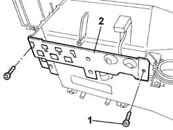
Applies to: all engines; all production periods
1. Remove the retaining band.
2. Undo the fixing bolts.
3. Remove the condensation drainage pipe and condensation filter.
4. Undo the fixing bolts.
5. Remove the condensation drainage connector.
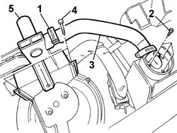
Applies to: all engines; all production periods
- Remove the insulation from the expansion valve.
1. Undo the fixing bolts (1a) and (1b).
2. Remove the connector between the expansion valve and the air conditioning system pipes.
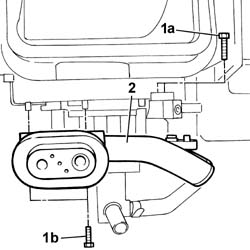
Applies to: all engines; all production periods
1. Remove the expansion valve.
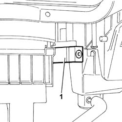
Applies to: all engines; all production periods
1. Undo the fixing bolts.
2. Remove the recirculation air intake unit.
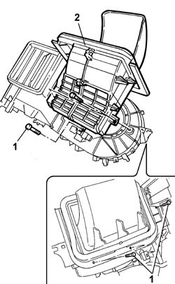
Applies to: all engines; all production periods
1. Release the control cable (1a) from the spring (1b) and disconnect it from the recirculation air intake.
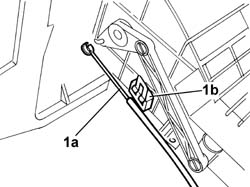
Applies to: all engines; all production periods
1. Undo the fixing bolts.
2. Remove the air conditioning fan.
3. Undo the fixing bolts.
4. Remove the air conditioning fan motor resistance.
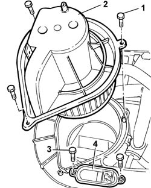
Applies to: all engines; all production periods
1. Undo the fixing bolts.
2. Remove the rear guard.
3. Undo the fixing bolt.
4. Remove the side guard.
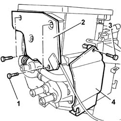
Applies to: all engines; all production periods
1. Remove the bands (1a) and (1b) retaining the heater radiator supply and return pipes.
2. Undo the bolts fixing the tap.
- Open the tap control cable retaining spring.
3. Disconnect the tap control cable and remove it.
4. Disconnect the heater radiator supply and return pipes and remove the tap.
5. Remove the band (5a) and remove the flexible pipe complete with connector for bleeding the cooling system (5b).
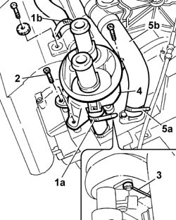
Applies to: all engines; all production periods
1. Undo the fixing bolts.
2. Remove the floor air distribution flap cover.
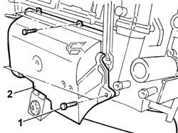
Applies to: all engines; all production periods
1. Disconnect the linkage using a suitable tool.
2. Release the floor air distribution flap and remove it.
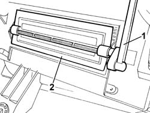
Applies to: all engines; all production periods
1. Undo the fixing bolt.
2. Remove the flap linkage control device.
3. Undo the fixing bolt.
4. Remove the floor air distribution flap linkage.
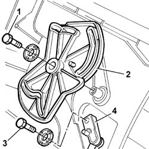
Applies to: all engines; all production periods
1. Act on the springs (1a) and remove the linkage (1b).
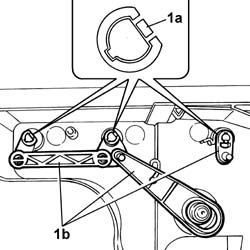
Applies to: all engines; all production periods
- Remove the upper seal using a suitable tool.
1. Undo the fixing bolts.
2. Remove the metal springs.
3. Remove the front upper half casing.
4. Remove the flaps.
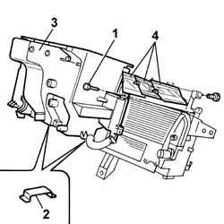
Applies to: all engines; all production periods
1. Undo the fixing bolt and release the frost thermostat.
2. Undo the fixing bolts.
3. Remove the rear upper half casing.
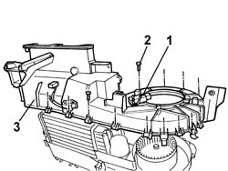
Applies to: all engines; all production periods
1. Remove the air conditioning heater radiator.
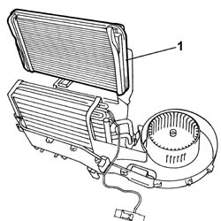
Applies to: all engines; all production periods
1. Remove the air conditioning dvaporator.
2. Disconnect the frost sensor complete with thermostat and remove it.
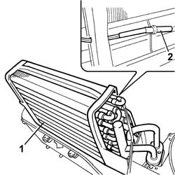
Applies to: all engines; all production periods
Refitting
Removing- Position the frost sensor on the air conditioning evaporator.
- Position the air conditioning evaporator on the lower half casing.
- Position the air conditioning heater radiator on the lower half casing.
- Position the rear upper half casing and tighten the fixing bolts.
- Position the frost thermostat in the housing in the rear upper half casing and tighten the fixing bolt.
- Position the flaps inside the half casings.
- Tighten the fixing bolts.
- Attach the metal springs.
- Fit a new upper seal.
- Position the flap linkage and secure it.
- Position the floor air distribution flap linkage and tighten the fixing bolt.
- Position the flap linkage control device and tighten the fixing bolt.
- Position the floor air distribution flap and secure it.
- Connect the linkage.
- Position the floor air distribution flap cover and tighten the fixing bolt.
- Connect the tap control cable and secure it to the fastening spring.
- Position the tap and tighten the fixing bolts.
- Position the flexible pipe complete with connector for bleeding the cooling system.
- Lock the flexible pipe complete with connector for bleeding the cooling system to the heater radiator and to the tap using suitable retaining bands.
- Position the side guard and tighten the fixing bolt.
- Position the rear guard and tighten the fixing bolts.
- Position the air conditioning fan motor resistance and tighten the fixing bolts.
- Position the air conditioning fan and tighten the fixing bolts.
- Connect the control cable and secure it to the spring.
- Position the recirculation air intake unit and tighten the fixing bolts.
- Position the expansion valve on the air conditioning condenser connector.
- Position the connector between the expansion valve and the air conditioning system pipes and tighten the fixing bolts.
- Refit the insulation on the expansion valve.
- Position the condensation drainage connector and tighten the fixing bolts.
- Position the condensation drainage pipe and the condensation filter, tighten the fixing bolts and secure them using a suitable band.
- Position the relay and cable mounting bracket under the dashboard and tighten the fixing bolts.